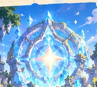

Archer
A calm forest ranger with a magical bow.
“I don't miss.”
The Heart Star is fading, and the world is losing its magic. Two adventurers. One Star Fragment. Only one can become the Guardian of the Star.
Play Now
Long ago, the world was protected by the Heart Star — a magical source of energy that kept the world's magic alive.
Now, it's disappearing. The only way to restore it is through the last Star Fragment.
Only the strongest warrior may carry the Star Fragment to save the world.
Two adventurers, one fragment, and a final battle to decide the true Guardian of the Star.
A calm forest ranger with a magical bow.
“I don't miss.”
A young inventor with a crystal gun.
“Why use a sword when technology exists?”
A reckless magician with magic bombs.
“I know exactly what I'm doing.”
A mysterious warrior from the Shadow Clan.
“You never saw me coming.”